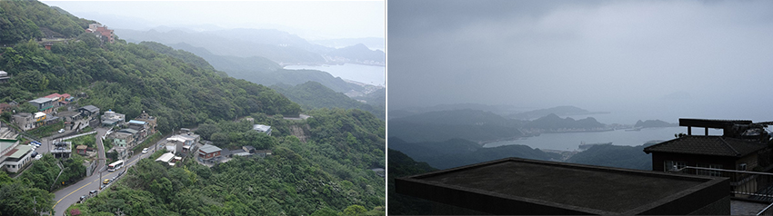
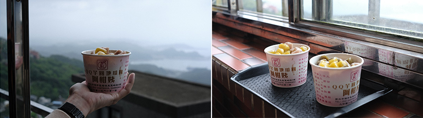
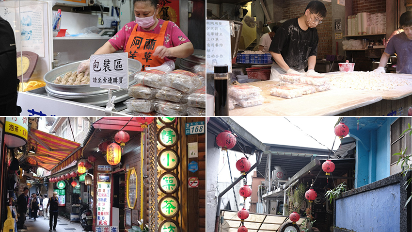
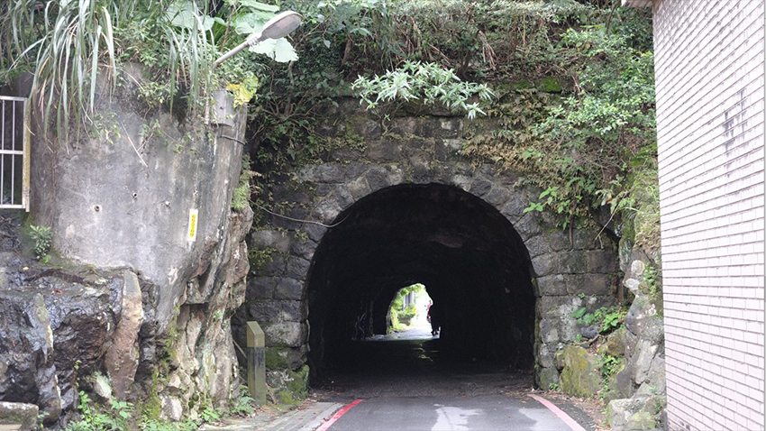
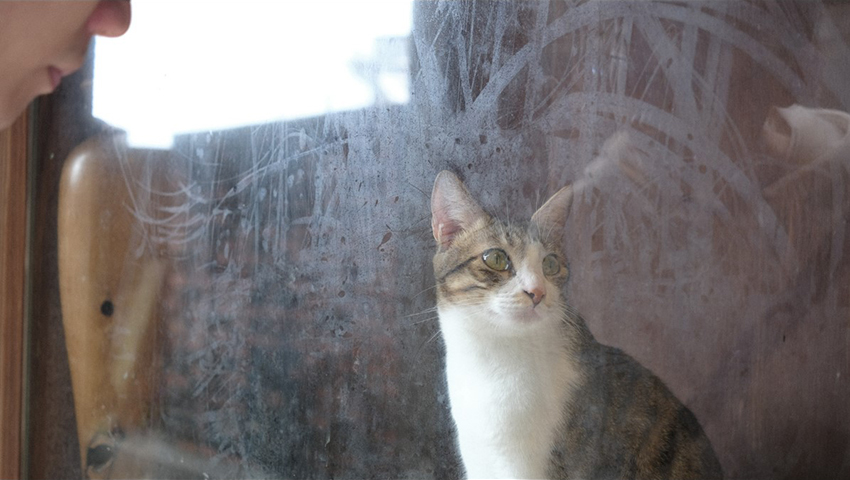

九份老街路口前有很多小型停車場，競爭感覺很激烈，很多老闆會在門前招攬客人，但是我們把車停在老街路口再往上走一些的山腰，需要穿梭九份因地形而特有高高低低的小階梯才會抵達老街，沿途經過很多延著山坡搭建的老民宅，發現很多家門前都擺滿燒柴用的木頭，好特 別，不曉得他們是燒柴煮飯還是燒柴取暖。
|  |
九份一直都是外國旅客很喜歡的景點，老街的店員都會配合旅客用英文、日文、韓文招呼客人，整條老街充斥著各種語言，老街也被人潮擠得水泄不通。還記得第一次來九份是小學的校外教學，當時印象最深刻的就是惡作劇商店，裡面賣著各種整人的小玩具，沒想到這次來九份發現那間店還在，真是歷史悠久。
老街上有很多間芋圓店，我們這次來的是「阿柑姨芋圓」，這間店總共有三層樓，二樓和三樓都有窗邊的桌子可以用餐，很幸運這次來店裡的人不多，我們獨享了一整排海景，打開窗戶吹著海風看著遠遠的基隆嶼吃著綜合口味的芋圓冰，忍不住想唱陳綺貞的《九份的咖啡店》。
|  |
九份還有其他很多好吃的小點，像是魚丸、花生捲冰淇淋，還有「阿蘭草仔粿」，阿蘭草仔粿是這些店裡生意最好的，店門前排了長長的人龍，但是他們動線安排得很好，不用等待太久。
|  |
這裡除了熱門的美味小吃以外，也被謠傳說是宮崎駿動畫《神隱少女》的場景，雖然後來澄清是誤傳，但實際走訪後真的發現很多景點都和動畫裡的畫面非常相似，除了最有名的阿妹茶樓以外，還有磅坑口也很像千尋穿越的隧道，以前九份和金瓜石以採煤礦與金礦聞名，而磅坑口就是當時為了讓台車從九份通行到金瓜石所挖出來的隧道，仔細看隧道內部可以看到岩石上佈滿著一條一條手工開挖的痕跡，可能因為前幾天都在下雨的關係，隧道的石壁裂縫都滲著滴滴答答的雨水，有一個路過的阿伯還戲稱這是山泉水可以喝呢！
|  |
從磅坑口往老街走回去會經過小小的公園，根據網路文章上記載，這是為了感謝嚴雲年先生所建立的，嚴雲年先生運用對於九份的礦脈熟悉與了解，並利用採礦承包制，帶著九份進入礦產的鼎盛時期呢，而公園前方有一個瞭望台，供旅客坐在長椅上休息，遠眺雞籠山，非常愜意。很高興時隔多年再來九份老街走走，看到許多以前來沒注意到的，很推薦大家在假日的時候來這裡探險，一定也會有許多意想不到的收穫！
|  |
| 九份貓咪 |